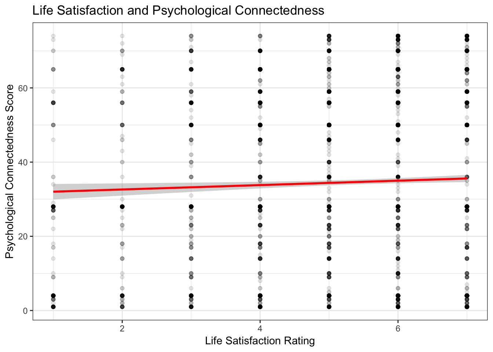

Using the National Financial Well-Being Survey from the Consumer Financial Protection Bureau, we will generate recommendations for policy and lobbying efforts for X NGO to achieve their goal of improving individual life satisfaction.
Data retrieved from: https://www.consumerfinance.gov/data-research/financial-well-being-survey-data/
Click here to see the code for this analysis: https://github.com/lama-ahmad/DataAnalysis-R/blob/master/financialwellbeing.Rmd
There is a positive relationship between an individual’s Financial Well-Being Score and Life Satisfaction rating. For each one digit increase in life satisfaction rating, the financial well-being score increased by about 5 points. An individual that rates their life satisfaction as 1 (Strongly disagree that they are satisfied with their life) has an average financial well-being score of 28, while an individual that rates their life sastifaction as 7 (Strong agree that they are satisfied with their life), has an average financial well-being score of 52.
There is also a positive relationship between an individual’s Psychological Connectedness Score and Life Satisfaction rating. For each one digit increase in life satisfaction rating, the psychological connectedness score increased by about 3 points. An individual that rates their life satisfaction as 1 (Strongly disagree that they are satisfied with their life) has an average psychological connectedness score of 40, while an individual that rates their life sastifaction as 7 (Strong agree that they are satisfied with their life), has an average financial well-being score of 55.

Given that there is a greater average point increase between financial well-being scores and life satisfaction, financial well-being is more closely tied to life satisfaction.
We know that there is a positive relationship between financial well-being and life satisfaction (see above). There is also a positive relationship between psychological connectedness and financial well-being. For every 1 point increase in financial well-being, connectedness increases by 0.2 points. Therefore, there is a slight tie between connectedness and financial well being that indirectly leads to incrased life satisfaction.
Increasing financial skills has a positive relationship with life satisfaction. For every 1 point increase in financial skills, life satisfaction increases by .04 points.
For every 1 unit that education improves, life satisfaction increases by 0.13 points.
For every 1 unit that income improves, life satisfaction increases by 0.10 points.
Based on the above analyses, more direct approaches than increasing financial skills such as increasing income and education levels result in a greater increase of life satisfaction per unit increase of income and education. Education seems to have the greatest increase per unit on life satisfaction.
For males, every one unit in education increased leads to 0.16 increase in life satisfaction score, whereas for females every one unit in education increased leads to 0.11 increase in life satisfaction score. Therefore, the initiative would be slightly more effective for males than females.
Among different racial groups, the ‘Other, Non-Hispanic’ category would see the greatest increase in life satisfaction for every 1 unit of education increased. On the other hand, the Hispanic category has a negative relationship with education, where every unit of education increased leads to a slight decrease in life satisfaction.
Health is an important indicator of life satisfaction, and related to health is the availability of a health insurance plan. Individuals who said reported that they did have a health insurance plan had on average a 0.3 higher life satisfaction score.
We recommend taking in to consideration health related policies, specifically finding out about policies that give individuals access to health insurance in order to increase life satisifaction.
Our results also indicated that it would be beneficial to think about programs and policies that help to increase education, although White individuals would always benefit most from increasing education. We also learned that Life Satisfaction is intimately tied to financial well-being, and financial well-being does have a slight connection to psychological connectedness in determining the outcome on life satisfaction.
Further analyses could include digging deeper into the differences in developing programming for different gender and ethnic groups.
Note that any data that is coded as Refused or Response Not Written to Database is removed from analyses. For the purpose of this analysis, we are only interested in data that is not missing.
To examine the effect of life satisfaction on financial well-being, I ran a linear model and found a significant positive relationship between life satisfaction and financial well-being.
| Dependent variable: | |
| as.numeric(FWBscore) | |
| as.numeric(SWB_1) | 4.804*** |
| (0.109) | |
| Constant | 16.323*** |
| (0.608) | |
| Observations | 6,055 |
| R2 | 0.242 |
| Adjusted R2 | 0.242 |
| Residual Std. Error | 12.138 (df = 6053) |
| F Statistic | 1,936.221*** (df = 1; 6053) |
| Note: | p<0.1; p<0.05; p<0.01 |
To examine the effect of life satisfaction on psychological connectedness, I ran a linear model and found a significant positive relationship between life satisfaction and psychological connectedness.
| Dependent variable: | |
| as.numeric(CONNECT) | |
| SWB_12 | 9.181*** |
| (2.973) | |
| SWB_13 | 10.638*** |
| (2.534) | |
| SWB_14 | 10.896*** |
| (2.302) | |
| SWB_15 | 16.443*** |
| (2.215) | |
| SWB_16 | 16.894*** |
| (2.190) | |
| SWB_17 | 9.023*** |
| (2.212) | |
| Constant | 21.378*** |
| (2.110) | |
| Observations | 6,055 |
| R2 | 0.025 |
| Adjusted R2 | 0.024 |
| Residual Std. Error | 25.227 (df = 6048) |
| F Statistic | 25.797*** (df = 6; 6048) |
| Note: | p<0.1; p<0.05; p<0.01 |
To examine the effect of psychological connectedness on financial well-being, I ran a linear model and found a significant positive relationship between psychological connectedness and financial well-being.
| Dependent variable: | |
| as.numeric(FWBscore) | |
| as.numeric(CONNECT) | 0.050*** |
| (0.007) | |
| Constant | 40.474*** |
| (0.301) | |
| Observations | 6,055 |
| R2 | 0.008 |
| Adjusted R2 | 0.008 |
| Residual Std. Error | 13.887 (df = 6053) |
| F Statistic | 50.638*** (df = 1; 6053) |
| Note: | p<0.1; p<0.05; p<0.01 |
To examine the effect of financial skills on financial well-being, I ran a linear model and found a significant positive relationship between psychological connectedness and financial skills.
| Dependent variable: | |
| as.numeric(SWB_1) | |
| as.numeric(FSscore) | 0.040*** |
| (0.001) | |
| Constant | 3.747*** |
| (0.058) | |
| Observations | 6,055 |
| R2 | 0.125 |
| Adjusted R2 | 0.125 |
| Residual Std. Error | 1.336 (df = 6053) |
| F Statistic | 867.960*** (df = 1; 6053) |
| Note: | p<0.1; p<0.05; p<0.01 |
To examine the effect of education on life satisfaction, I ran a linear model and found a significant positive relationship between education and life satisfaction.
| Dependent variable: | |
| as.numeric(SWB_1) | |
| as.numeric(PPEDUC) | 0.130*** |
| (0.016) | |
| Constant | 4.972*** |
| (0.053) | |
| Observations | 6,055 |
| R2 | 0.011 |
| Adjusted R2 | 0.011 |
| Residual Std. Error | 1.421 (df = 6053) |
| F Statistic | 69.991*** (df = 1; 6053) |
| Note: | p<0.1; p<0.05; p<0.01 |
To examine the effect of income on life satisfaction, I ran a linear model and found a significant positive relationship between income and life satisfaction.
| Dependent variable: | |
| as.numeric(SWB_1) | |
| as.numeric(PPINCIMP) | 0.108*** |
| (0.007) | |
| Constant | 4.786*** |
| (0.042) | |
| Observations | 6,055 |
| R2 | 0.040 |
| Adjusted R2 | 0.040 |
| Residual Std. Error | 1.400 (df = 6053) |
| F Statistic | 254.406*** (df = 1; 6053) |
| Note: | p<0.1; p<0.05; p<0.01 |
After finding the greatest change in life satisfaction due to education levels, I faceted by gender and racial groups in different linear models by subsetting only the characteristics I was interested in.
| Dependent variable: | |
| as.numeric(SWB_1) | |
| as.numeric(PPEDUC) | 0.159*** |
| (0.021) | |
| Constant | 4.831*** |
| (0.075) | |
| Observations | 3,197 |
| R2 | 0.017 |
| Adjusted R2 | 0.017 |
| Residual Std. Error | 1.388 (df = 3195) |
| F Statistic | 55.864*** (df = 1; 3195) |
| Note: | p<0.1; p<0.05; p<0.01 |
| Dependent variable: | |
| as.numeric(SWB_1) | |
| as.numeric(PPEDUC) | 0.110*** |
| (0.023) | |
| Constant | 5.079*** |
| (0.075) | |
| Observations | 2,858 |
| R2 | 0.008 |
| Adjusted R2 | 0.008 |
| Residual Std. Error | 1.455 (df = 2856) |
| F Statistic | 22.668*** (df = 1; 2856) |
| Note: | p<0.1; p<0.05; p<0.01 |
| Dependent variable: | |
| as.numeric(SWB_1) | |
| as.numeric(PPEDUC) | 0.177*** |
| (0.018) | |
| Constant | 4.840*** |
| (0.062) | |
| Observations | 4,306 |
| R2 | 0.022 |
| Adjusted R2 | 0.022 |
| Residual Std. Error | 1.361 (df = 4304) |
| F Statistic | 97.061*** (df = 1; 4304) |
| Note: | p<0.1; p<0.05; p<0.01 |
| Dependent variable: | |
| as.numeric(SWB_1) | |
| as.numeric(PPEDUC) | 0.105* |
| (0.055) | |
| Constant | 4.901*** |
| (0.182) | |
| Observations | 626 |
| R2 | 0.006 |
| Adjusted R2 | 0.004 |
| Residual Std. Error | 1.553 (df = 624) |
| F Statistic | 3.629* (df = 1; 624) |
| Note: | p<0.1; p<0.05; p<0.01 |
| Dependent variable: | |
| as.numeric(SWB_1) | |
| as.numeric(PPEDUC) | 0.221*** |
| (0.077) | |
| Constant | 4.267*** |
| (0.284) | |
| Observations | 312 |
| R2 | 0.026 |
| Adjusted R2 | 0.022 |
| Residual Std. Error | 1.586 (df = 310) |
| F Statistic | 8.149*** (df = 1; 310) |
| Note: | p<0.1; p<0.05; p<0.01 |
| Dependent variable: | |
| as.numeric(SWB_1) | |
| as.numeric(PPEDUC) | -0.052 |
| (0.044) | |
| Constant | 5.602*** |
| (0.130) | |
| Observations | 811 |
| R2 | 0.002 |
| Adjusted R2 | 0.0004 |
| Residual Std. Error | 1.503 (df = 809) |
| F Statistic | 1.358 (df = 1; 809) |
| Note: | p<0.1; p<0.05; p<0.01 |
I ran a linear model to test the tie between health insurance benefits and life satisfaction. There is a positive significant relationship between having health insurance benefits and life satisfaction.
| Dependent variable: | |
| as.numeric(SWB_1) | |
| BENEFITS_1Yes | 0.325*** |
| (0.041) | |
| Constant | 5.153*** |
| (0.034) | |
| Observations | 6,055 |
| R2 | 0.011 |
| Adjusted R2 | 0.010 |
| Residual Std. Error | 1.421 (df = 6053) |
| F Statistic | 64.301*** (df = 1; 6053) |
| Note: | p<0.1; p<0.05; p<0.01 |